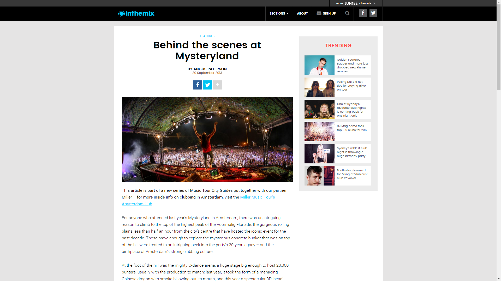
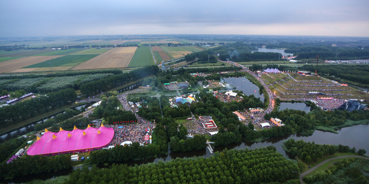
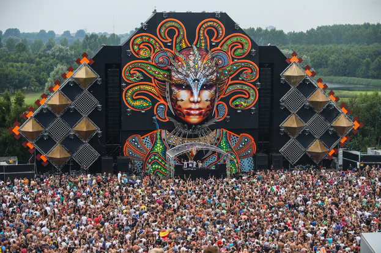
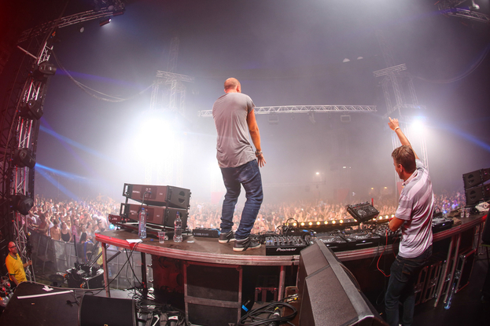
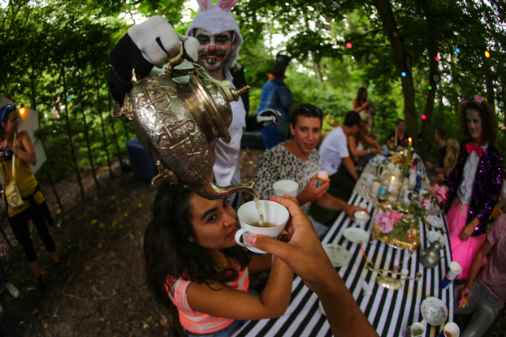
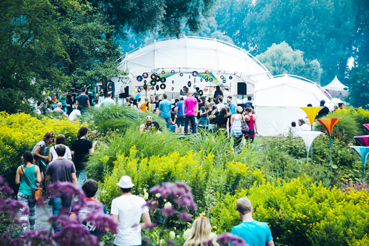
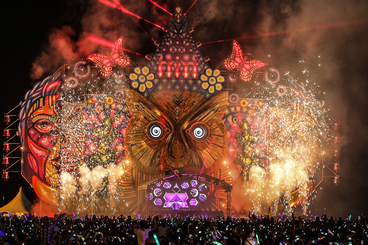
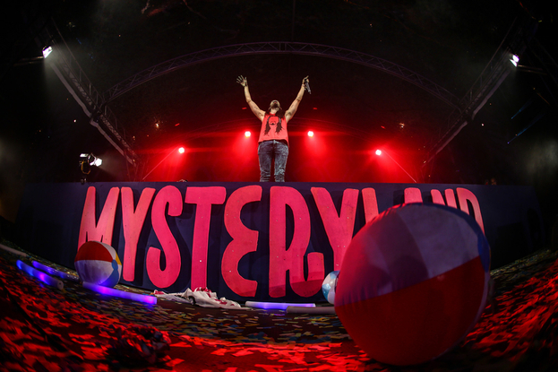

Behind the scenes at Mysteryland
{kind=link}

For anyone who attended last year’s Mysteryland in Amsterdam, there was an intriguing reason to climb to the top of the highest peak of the Voormalig Floriade, the gorgeous rolling plains less than half an hour from the city’s centre that have hosted the iconic event for the past decade. Those brave enough to explore the mysterious concrete bunker that was on top of the hill were treated to an intriguing peek into the party’s 20-year legacy – and the birthplace of Amsterdam’s strong clubbing culture.
At the foot of the hill was the mighty Q-dance arena, a huge stage big enough to host 20,000 punters, usually with the production to match: last year, it took the form of a menacing Chinese dragon with smoke billowing out its mouth, and this year a spectacular 3D ‘head’ flanked by a menacing array of speakers. The dance-floor stretches back to the hill, which is itself a spectacular formation, with colourful flags circling its slopes like giant bunting. It was somehow carved by Dutch farmers into a pyramid formation, and the vault perched on its peak was labeled intriguingly on the Mysteryland map with a simple, mysterious ”?”. What could it be?
{kind=link}

Once you’re admitted through the vault’s menacing doors, it’s a sweaty room with brick walls and incredibly low ceilings, and feels like the sort of place you’d bunker down for the apocalypse. It turns out it’s the Thunderdome arena, the brand that revels in the aggressive sounds of hardcore and gabba; the sounds that launched ID&T in the early ‘90s. While Mysteryland is one of the events that helped set the template for the multi-genre, spectacle-heavy EDM festivals now happening all over the world, the unforgiving atmosphere and 150+ BPMs of the bunker are actually where the party found its beginnings in 1993.
Dutch co-founder Irfan van Ewijk (the ‘I’ in ID&T), who helped alongside Duncan Stutterheim to steer the company to international glory from its modest beginnings in 1992, spoke with inthemix about how their beloved Mysteryland has evolved over the years.
“We actually went from ‘fuck it all’ to ‘love it all’,” he laughed. “We’ve changed a lot. We started off as a promoter of hardcore events, and on a musical level it was intense. It was mostly focused on a very young, masculine and energetic crowd… It was really quite radical.”
{kind=link}

The first major shift in the history of Mysteryland came a decade after ID&T’s first event. “In 2002, we stepped away from it all to become very varied. In doing this, we initially dropped off from 40,000 visitors to 16,000 visitors, but we didn’t compromise the production side at all. We had a kickass lineup with a lot of variety, and 40 different areas I believe.
“It was in a totally different area, but it was close to Amsterdam because we believed we needed to be close to the heart of dance culture in Holland. And that event really did represent the re-launch of Mysteryland. We went from a hardcore event that went across the day and night, into a day event that had multiple musical elements, and was also much more focused on the creative and cultural incentives. And we haven’t wavered from that direction ever since.”
Setting the standard
Mysteryland’s 20th anniversary this year makes it the world’s longest-running dance event. ID&T would eventually branch out into the similarly-themed Tomorrowland in Belgium, and while that event came to eclipse its parent in terms of hype, Mysteryland has an otherworldly atmosphere all of its own that makes it one of the best dance events in Europe: the out-of-this-world production; the excessive lineups; the insane mainstage designs. The 2006 event was perhaps the most iconic, with thousands milling in front of a colossal castle stage, an image much like Sensation’s ‘Oak of Love’ that was absorbed into the dance culture zeitgeist.
“If you look at the portfolio of ID&T, anybody with a little knowledge of our history, and our position of being a producer instead of just a promoter, can definitely see the difference in our events,” Irfan said, emphasising that it’s about a lot more than just booking the big-name DJs.
“It’s mainly driven by the music, the public, and the interaction between the two… The events themselves are not driven by the popularity of big names, of $200-300,000 talent.”
{kind=link}

This strategy could be seen in the talent picked for Mysteryland’s mainstage this year. While a trio of big-league EDM talent that included Porter Robinson, Steve Angello and Steve Aoki were present to close the festival, it was otherwise a more restrained affair than other festivals of its ilk. In the early afternoon the pumped crowd was treated to a perfectly-crafted set from Joris Voorn, who came out firing with a jackin’ set of tech house that was furiously groovy, and didn’t let up in energy. It’s difficult to imagine Voorn playing the main-stage of Tomorrowland or Ultra Europe, but that’s the edge of sophistication that Mysteryland holds over its more commercial brethren.
“It’s purely about the feelings that are being created at the event, and the gathering of like-minded people who are enjoying the surroundings and music,” Irfan said. “We really want to give people a 360 degree experience, whether it’s in the moment, or their memories looking back at it. It should cover all senses. We try to really get in deep into people’s memories.”
Getting amongst the Mystery
This year’s main-stage design was certainly a spectacle. In typical opulent style, it was a magnificent owl tasked as keeper of the DJ booth, its moving eyes peering down upon the crowd with a view of the water behind it. The joy is in watching these designs come alive at sundown (aided by lasers, lights and flamethrowers of course), when the structure somehow seems to grow in stature to tower over the thousands gathered.
To focus too much on the mainstage spectacle, though, is to miss the point of Mysteryland; its real strength comes from the genuine love and care that goes into creating a fantasy world. It’s a party that trades excess for style – it’s not just about the smoke cannons on the main-stage, it’s also about all the little details in-between that flesh out the experience.
{kind=link}

“Every year, we often see that the smallest details are being perceived as the highlights, instead of the performances from DJs like David Guetta or Tiesto or anyone like that. That’s what surprises people, and creates the intense storytelling of this experience. An emphasis on the culture is where we put most of our energy, and we take a lot of pride in that.”
The Voormalig Floriade itself is one of the biggest stars. The crowd feels evenly dispersed across the 15 different stages, creating an exploratory vibe as you walk the grassy fields, cross the rivers and climb towering slopes (or otherwise slide down them), in order to get from stage to stage. If the mainstage EDM is doing your head in, there’s plenty elsewhere to enjoy. In the festival’s far north corner you’ll find the Electric Deluxe Presents tent, catering to Holland’s healthy love of proper smashing techno with acts like Joseph Capriati and Speedy J.
Another key spot this year was around the corner from the mainstage, along a path hosting a row of art and craft stalls, as well as roaming costumed performers, art installations and forest decorations. Keep walking and you’d find the Studio 80 tent right next to the Visionquest room. The former is named after the Amsterdam club and hosted a classy cast of house and techno heroes including Eats Everything, Cassy, Steve Rachmad and a particularly spirited (not to mention pumping) closing set from 2000 And One. Earlier in the day, Tiga played one of the more memorable sets; his sound capturing the fun-yet-authentic vibe of the tent, showcasing his recent shift towards techno that’s also kept the electro-pop edge of his early career. Meanwhile, the Visionquest stage was a circular wooden structure with a tiered wooden dancefloor, recalling the feel of a church while the colorful canvas roof recalled a circus tent. Label diva Dinky played a beautiful, gentle live set earlier in the day that saw her jumping on the mic, while heavies like Seth Troxler and Shaun Reeves stepped up for an intense few hours later on.
{kind=link}

Mysteryland 2013 / De Fotomeisjes
You could spend your entire day enjoying the fruits of these few stages, but an adventure to the south of the grounds is essential; it’s where the expanse of the Floriade really opens up. To get there you’ll have to cross a winding path over a lake that’s dotted with giant lilypads, a swirl of balloons suspended above. Beyond, it becomes clear how much effort is invested every year to fill every inch of the festival grounds with colourful detail. Flags and structures built from tall wooden slats pepper the hills, mini villages are to be found everywhere, and around every corner there’s something wonderful and strange to greet you: there’s a ‘Healing Garden’; wooden giraffes peering curiously out at you; a cast of Wonderland characters having a tea party. You might stumble across a giant teddy bear you can plonk yourself under for a rest.
Both the main-stage and Q-dance arena host spectacular ‘end-shows’ in the final half hour, where ID&T pull out every trick in the book. And while these are certainly un-missable, every time you fold out your map during the day you’re instructed to ‘Go On and Get Lost!” This ends up being the Mysteryland status quo. The setting is just too wonderful for any one spot to hold your attention for long, and you find yourself wandering aimlessly from stage to stage, wide-eyed.
Taking Amsterdam to the world
Just before the 2012 edition of Mysteryland, inthemix spoke with Irfan van Ewijk and he was in a particularly exuberant mood, thanks to ID&T’s first adventure into the US in the form of the Qdance stage at Electric Daisy Carnival. At that point, he was already talking about taking Mysteryland to North America, after a particularly successful launch in Chile the year before.
“We’re already exploring possible venues, teaming up with local promoters and researching the possible options of entering the country as much as possible, to bring more of our portfolio. In addition to Sensation, Mysteryland will have the same fate pretty soon. It’s very exciting.”
{kind=link}

Just a few days before this year’s 20th anniversary event in Amsterdam, official details were finally announced about Mysteryland’s upcoming introduction to the US, where it appears the authentic Amsterdam experience will be kept well intact. One difficulty was always going to be securing a location that could stand in for the Voormalig Floriade, though by partnering with Bethel Woods, the site of the iconic 1969 Woodstock Festival, they did a fine job. Mysteryland will be the first festival of the modern-era to take place on the grounds, with the organisers citing a shared belief in many of the same principles: creativity; unity; social responsibility; and a focus on the “experience” of the guest.
“They were some of the key elements that convinced Woodstock to welcome us, as opposed to other festivals,” Irfan said. Mysteryland’s new incarnation at Woodstock will begin at a modest capacity of 20,000 tickets, and Irfan says there is a desire on both sides to start off slowly.
“We don’t want to begin top down and sell as many tickets as possible. We want to invite and engage people who are truly interested, instead of shouting out and getting as many people as possible. The organisers from Bethel Woods are a little cautious…but we’re okay with that. There are dance events now in the US that attract 100,000 people a day. They just want to make sure we stick to our core values, and we want to see where it grows in years to come.”
{kind=link}

As ID&T’s first flagship event, Mysteryland was just the beginning of a series of event brands like Sensation and Q-dance, which have stretched all the way to North America and Australia, taking with them the same reputation for creativity, attention to detail, and sense of culture and community.
In this sense, the ID&T project reflects the wider contribution made by the Netherlands to global dance culture – they’ve shown a whole lot of determination and creativity for a population of only around 15 million, and 20 years later the world is still taking notice.
Angus Thomas Paterson is a former inthemix Editor and freelance journalist currently based in Berlin.